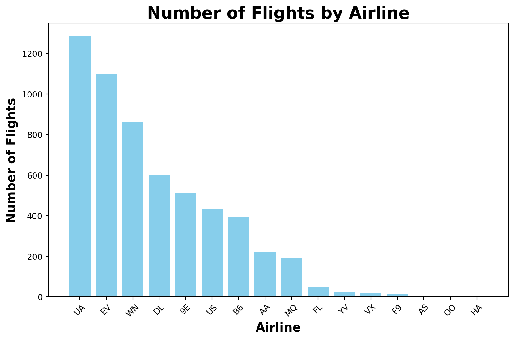

‘nycflights13’ 보고서
UA 항공의 제조사별 출발 지연 분석
Team F5 : 정의주, 한지수, 신태선
상황 설정
1. 운항 지연 분석 배경

분석 목표
어떤 제조사의 기체가 지연을 자주 유발하는지 확인 후 운항 효율성 개선
2. 데이터 분비 및 전처리
2.1 사용하는 Python 라이브러리
<class 'pandas.core.frame.DataFrame'>
RangeIndex: 336776 entries, 0 to 336775
Data columns (total 19 columns):
# Column Non-Null Count Dtype
--- ------ -------------- -----
0 year 336776 non-null int64
1 month 336776 non-null int64
2 day 336776 non-null int64
3 dep_time 328521 non-null float64
4 sched_dep_time 336776 non-null int64
5 dep_delay 328521 non-null float64
6 arr_time 328063 non-null float64
7 sched_arr_time 336776 non-null int64
8 arr_delay 327346 non-null float64
9 carrier 336776 non-null object
10 flight 336776 non-null int64
11 tailnum 334264 non-null object
12 origin 336776 non-null object
13 dest 336776 non-null object
14 air_time 327346 non-null float64
15 distance 336776 non-null int64
16 hour 336776 non-null int64
17 minute 336776 non-null int64
18 time_hour 336776 non-null object
dtypes: float64(5), int64(9), object(5)
memory usage: 48.8+ MB
<class 'pandas.core.frame.DataFrame'>
RangeIndex: 3322 entries, 0 to 3321
Data columns (total 9 columns):
# Column Non-Null Count Dtype
--- ------ -------------- -----
0 tailnum 3322 non-null object
1 year 3252 non-null float64
2 type 3322 non-null object
3 manufacturer 3322 non-null object
4 model 3322 non-null object
5 engines 3322 non-null int64
6 seats 3322 non-null int64
7 speed 23 non-null float64
8 engine 3322 non-null object
dtypes: float64(2), int64(2), object(5)
memory usage: 233.7+ KB2.2 데이터 병합
- 두 데이터를 tailnum(기체 등록번호) 기준으로 병합하여 기체별 제조사 정보를 결합
<class 'pandas.core.frame.DataFrame'>
RangeIndex: 336776 entries, 0 to 336775
Data columns (total 27 columns):
# Column Non-Null Count Dtype
--- ------ -------------- -----
0 year_x 336776 non-null int64
1 month 336776 non-null int64
2 day 336776 non-null int64
3 dep_time 328521 non-null float64
4 sched_dep_time 336776 non-null int64
5 dep_delay 328521 non-null float64
6 arr_time 328063 non-null float64
7 sched_arr_time 336776 non-null int64
8 arr_delay 327346 non-null float64
9 carrier 336776 non-null object
10 flight 336776 non-null int64
11 tailnum 334264 non-null object
12 origin 336776 non-null object
13 dest 336776 non-null object
14 air_time 327346 non-null float64
15 distance 336776 non-null int64
16 hour 336776 non-null int64
17 minute 336776 non-null int64
18 time_hour 336776 non-null object
19 year_y 278864 non-null float64
20 type 284170 non-null object
21 manufacturer 284170 non-null object
22 model 284170 non-null object
23 engines 284170 non-null float64
24 seats 284170 non-null float64
25 speed 963 non-null float64
26 engine 284170 non-null object
dtypes: float64(9), int64(9), object(9)
memory usage: 69.4+ MB2.2 날짜 및 시간 데이터 생성
연(year_x), 월(month), 일(day), 시(hour), 분(minute) 데이터를 조합하여 date_time 생성 2013년 1월~6월(상반기) 데이터를 필터링
2.3 지연시간 관련 전처리
음수 도착 지연 시간 제거 (빠른 이륙은 지연 원인이 아니므로 분석 제외) 제조사별 운항 횟수 확인 우리는 운항이 가장 많은 항공사야 우리 항공사를 골라줘
- 항공사별 운항 횟수 집계
top_airline = df_fh[‘carrier’].value_counts().idxmax() # 운항 횟수가 가장 많은 항공사 선택
df_fh_our_airline = df_fh[df_fh[‘carrier’] == top_airline] # 우리 항공사의 데이터만 필터링 df_fh_our_airline = df_fh_our_airline[df_fh_our_airline[‘dep_delay’] >= 0] # 음수 제거
# 우리 항공사의 상위 5개 제조사 선정
```{python}
top_5_manufacturers = df_fh_our_airline['manufacturer'].value_counts().head(5).index어차피 3개밖에 안쓰는구나
제조사별 운항 횟수 집계
원형 그래프 (파이 차트) 생성
3. 제조사별 운항 지연 분석
3.1 제조사별 평균 지연 시간
이상치 제거를 위한 IQR(Interquartile Range) 계산
정상 범위 설정 (IQR 범위 내 데이터만 유지)
이상치 제거
- 제조사별 평균 지연 시간 및 표준편차 확인
3.2 제조사별 운항 횟수 대비 지연 비율
- 단순 평균 지연 시간 비교가 아닌, 운항 횟수 대비 지연 발생 비율 계산
3.3 제조사별 이륙 vs. 도착 지연 비교
- 특정 제조사의 기체에서 이륙 지연이 많은지, 운항 중 추가 지연이 발생하는지 분석
3.4 월별 지연 패턴 분석
- 제조사별 월별 평균 도착 지연 분석
df_fh_our_airline['month'] = df_fh_our_airline['date_time'].dt.month
monthly_delay = df_fh_our_airline.groupby(['manufacturer', 'month'])['arr_delay'].mean().unstack()
monthly_delay
plt.figure(figsize=(12,10))
monthly_delay = df_fh_our_airline.groupby(['manufacturer', 'month'])['dep_delay'].mean().unstack()
sns.lineplot(data=monthly_delay.T, marker="o")
plt.xlabel("Month")
plt.ylabel("Average Delay (minutes)")
plt.title("Monthly Average Delay by Manufacturer")
plt.legend(title="Manufacturer")
plt.grid(True)
plt.show()4. 데이터 시각화
4.1 제조사별 도착 지연 시간 분포
제조사별 평균 지연 시간 비교
mean_delays = df_fh_our_airline.groupby('manufacturer')['dep_delay'].mean().sort_values()
plt.figure(figsize=(10,5))
mean_delays.plot(kind='bar', color='skyblue')
plt.xlabel('Manufacturer')
plt.ylabel('Mean Departure Delay (minutes)')
plt.title('Mean Departure Delay by Manufacturer (Jan-Jun 2013)')
plt.grid(True)
plt.show()4.2 제조사별 이륙 vs. 도착 지연 비교 (가로 막대 그래프)
delay_comparison = df_fh_our_airline.groupby('manufacturer')[['dep_delay', 'arr_delay']].mean()
delay_comparison.plot(kind='barh', figsize=(12,6), color=['royalblue', 'tomato'])
plt.xlabel('Mean Delay (minutes)')
plt.ylabel('Manufacturer')
plt.title('Mean Departure vs. Arrival Delay by Manufacturer (Jan-Jun 2013)')
plt.legend(['Departure Delay', 'Arrival Delay'])
plt.grid(True)
plt.show()4.3 3차원 데이터 분석을 통해서 보기
제조사별 평균 이륙 지연, 도착 지연 및 운행 대수 데이터 준비
데이터 병합
3D 그래프 생성
x, y, z 좌표 설정
막대 너비 설정
3D 막대 그래프 형태로 시각화 (조금 더 정교한 스타일 적용)
축 설정 및 시각적 개선
ax.set_xlabel('Manufacturer', fontsize=12, labelpad=15, color = 'red')
ax.set_ylabel('Total Flights Operated', fontsize=12, labelpad=15)
ax.set_zlabel('Mean Delay (minutes)', fontsize=12, labelpad=15)
ax.set_xticks(x)
ax.set_xticklabels(x_labels, rotation=45, fontsize=10, ha='right')
ax.set_title('3D Visualization of Mean Departure & Arrival Delay by Manufacturer', fontsize=14, pad=20)
ax.view_init(elev=20, azim=120) # 시점 조정범례 추가
그래프 출력
5. 결론 및 운영 개선 방안

© 2025 Team F5